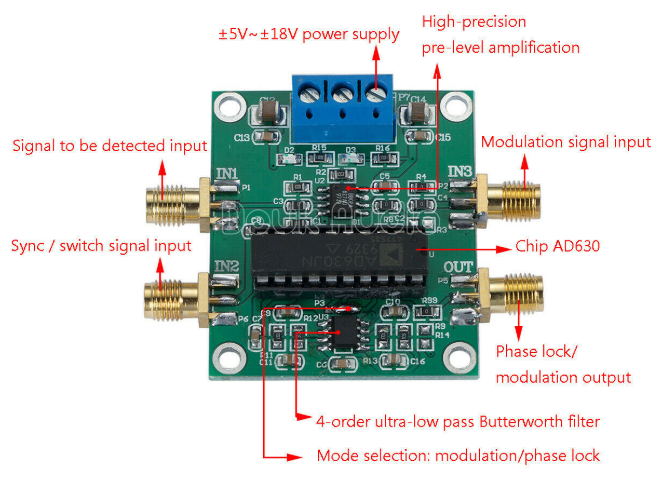
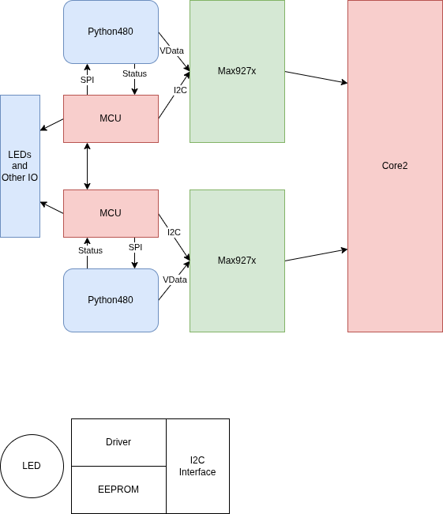
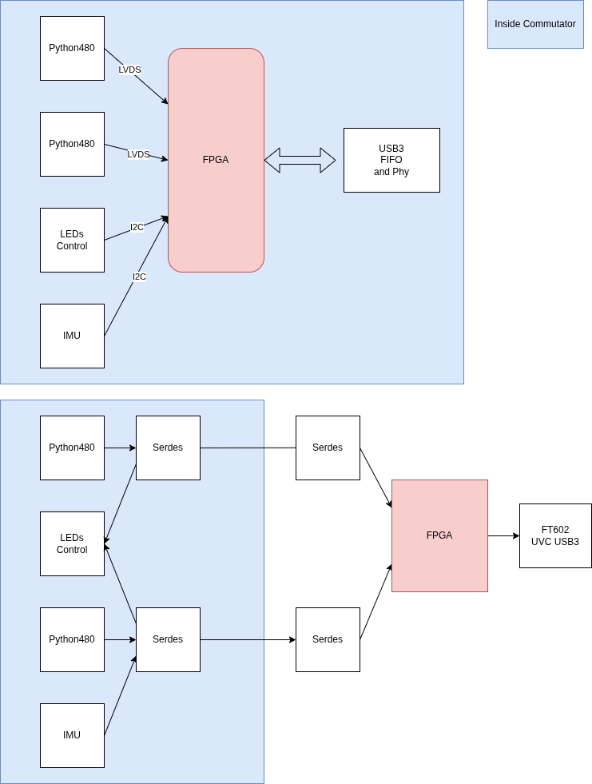
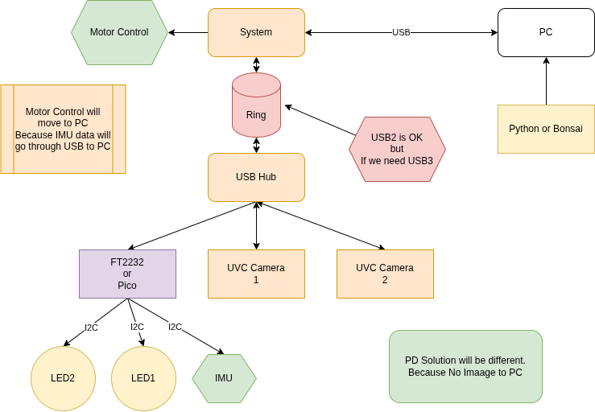

2026-02
2026-02-25 🌐 🎬 💾 📚 📑 🔬
Method for Converting a PWM Output to an Analog Output When Using Hall Effect Sensor ICs
Pico CDC Host use TinyUSB
#include "Adafruit_TinyUSB.h"
#define USE_TINYUSB_HOST 1
// Language ID: English
#define LANGUAGE_ID 0x0409
typedef struct {
tusb_desc_device_t desc_device;
uint16_t manufacturer[32];
uint16_t product[48];
uint16_t serial[16];
bool mounted;
} dev_info_t;
// CFG_TUH_DEVICE_MAX is defined by tusb_config header
dev_info_t dev_info[CFG_TUH_DEVICE_MAX] = { 0 };
Adafruit_USBH_Host USBHost;
// CDC Host object
Adafruit_USBH_CDC SerialHost;
// forward Seral <-> SerialHost
void forward_serial(void) {
char d;
uint8_t buf[64];
// Serial -> SerialHost
if (Serial1.available()) {
d = Serial1.read();
if (SerialHost && SerialHost.connected()) {
SerialHost.write(d);
SerialHost.flush();
}
}
// SerialHost -> Serial
if (SerialHost.connected() && SerialHost.available()) {
size_t count = SerialHost.read(buf, sizeof(buf));
Serial1.write(buf, count);
Serial1.flush();
}
}
//--------------------------------------------------------------------+
// setup() & loop()
//--------------------------------------------------------------------+
void setup() {
Serial1.begin(115200);
Serial1.println("TinyUSB Host: Device Info Example");
// Init USB Host on native controller roothub port0
USBHost.begin(0);
SerialHost.begin(115200);
}
void loop() {
USBHost.task();
Serial1.flush();
forward_serial();
}
//--------------------------------------------------------------------+
// TinyUSB Host callbacks
//--------------------------------------------------------------------+
void print_device_descriptor(tuh_xfer_t *xfer);
void utf16_to_utf8(uint16_t *temp_buf, size_t buf_len);
void print_lsusb(void) {
bool no_device = true;
for (uint8_t daddr = 1; daddr < CFG_TUH_DEVICE_MAX + 1; daddr++) {
// TODO can use tuh_mounted(daddr), but tinyusb has an bug
// use local connected flag instead
dev_info_t *dev = &dev_info[daddr - 1];
if (dev->mounted) {
Serial1.printf("Device %u: ID %04x:%04x %s %s\r\n", daddr,
dev->desc_device.idVendor, dev->desc_device.idProduct,
(char *) dev->manufacturer, (char *) dev->product);
no_device = false;
}
}
if (no_device) {
Serial1.println("No device connected (except hub)");
}
}
// Invoked when device is mounted (configured)
void tuh_mount_cb(uint8_t daddr) {
Serial1.printf("Device attached, address = %d\r\n", daddr);
dev_info_t *dev = &dev_info[daddr - 1];
dev->mounted = true;
// Get Device Descriptor
tuh_descriptor_get_device(daddr, &dev->desc_device, 18, print_device_descriptor, 0);
}
/// Invoked when device is unmounted (bus reset/unplugged)
void tuh_umount_cb(uint8_t daddr) {
Serial1.printf("Device removed, address = %d\r\n", daddr);
dev_info_t *dev = &dev_info[daddr - 1];
dev->mounted = false;
// print device summary
print_lsusb();
}
void print_device_descriptor(tuh_xfer_t *xfer) {
if (XFER_RESULT_SUCCESS != xfer->result) {
Serial1.printf("Failed to get device descriptor\r\n");
return;
}
uint8_t const daddr = xfer->daddr;
dev_info_t *dev = &dev_info[daddr - 1];
tusb_desc_device_t *desc = &dev->desc_device;
Serial1.printf("Device %u: ID %04x:%04x\r\n", daddr, desc->idVendor, desc->idProduct);
Serial1.printf("Device Descriptor:\r\n");
Serial1.printf(" bLength %u\r\n" , desc->bLength);
Serial1.printf(" bDescriptorType %u\r\n" , desc->bDescriptorType);
Serial1.printf(" bcdUSB %04x\r\n" , desc->bcdUSB);
Serial1.printf(" bDeviceClass %u\r\n" , desc->bDeviceClass);
Serial1.printf(" bDeviceSubClass %u\r\n" , desc->bDeviceSubClass);
Serial1.printf(" bDeviceProtocol %u\r\n" , desc->bDeviceProtocol);
Serial1.printf(" bMaxPacketSize0 %u\r\n" , desc->bMaxPacketSize0);
Serial1.printf(" idVendor 0x%04x\r\n" , desc->idVendor);
Serial1.printf(" idProduct 0x%04x\r\n" , desc->idProduct);
Serial1.printf(" bcdDevice %04x\r\n" , desc->bcdDevice);
// Get String descriptor using Sync API
Serial1.printf(" iManufacturer %u ", desc->iManufacturer);
if (XFER_RESULT_SUCCESS ==
tuh_descriptor_get_manufacturer_string_sync(daddr, LANGUAGE_ID, dev->manufacturer, sizeof(dev->manufacturer))) {
utf16_to_utf8(dev->manufacturer, sizeof(dev->manufacturer));
Serial1.printf((char *) dev->manufacturer);
}
Serial1.printf("\r\n");
Serial1.printf(" iProduct %u ", desc->iProduct);
if (XFER_RESULT_SUCCESS ==
tuh_descriptor_get_product_string_sync(daddr, LANGUAGE_ID, dev->product, sizeof(dev->product))) {
utf16_to_utf8(dev->product, sizeof(dev->product));
Serial1.printf((char *) dev->product);
}
Serial1.printf("\r\n");
Serial1.printf(" iSerialNumber %u ", desc->iSerialNumber);
if (XFER_RESULT_SUCCESS ==
tuh_descriptor_get_serial_string_sync(daddr, LANGUAGE_ID, dev->serial, sizeof(dev->serial))) {
utf16_to_utf8(dev->serial, sizeof(dev->serial));
Serial1.printf((char *) dev->serial);
}
Serial1.printf("\r\n");
Serial1.printf(" bNumConfigurations %u\r\n", desc->bNumConfigurations);
// print device summary
print_lsusb();
}
//--------------------------------------------------------------------+
// String Descriptor Helper
//--------------------------------------------------------------------+
static void _convert_utf16le_to_utf8(const uint16_t *utf16, size_t utf16_len, uint8_t *utf8, size_t utf8_len) {
// TODO: Check for runover.
(void) utf8_len;
// Get the UTF-16 length out of the data itself.
for (size_t i = 0; i < utf16_len; i++) {
uint16_t chr = utf16[i];
if (chr < 0x80) {
*utf8++ = chr & 0xff;
} else if (chr < 0x800) {
*utf8++ = (uint8_t) (0xC0 | (chr >> 6 & 0x1F));
*utf8++ = (uint8_t) (0x80 | (chr >> 0 & 0x3F));
} else {
// TODO: Verify surrogate.
*utf8++ = (uint8_t) (0xE0 | (chr >> 12 & 0x0F));
*utf8++ = (uint8_t) (0x80 | (chr >> 6 & 0x3F));
*utf8++ = (uint8_t) (0x80 | (chr >> 0 & 0x3F));
}
// TODO: Handle UTF-16 code points that take two entries.
}
}
// Count how many bytes a utf-16-le encoded string will take in utf-8.
static int _count_utf8_bytes(const uint16_t *buf, size_t len) {
size_t total_bytes = 0;
for (size_t i = 0; i < len; i++) {
uint16_t chr = buf[i];
if (chr < 0x80) {
total_bytes += 1;
} else if (chr < 0x800) {
total_bytes += 2;
} else {
total_bytes += 3;
}
// TODO: Handle UTF-16 code points that take two entries.
}
return total_bytes;
}
void utf16_to_utf8(uint16_t *temp_buf, size_t buf_len) {
size_t utf16_len = ((temp_buf[0] & 0xff) - 2) / sizeof(uint16_t);
size_t utf8_len = _count_utf8_bytes(temp_buf + 1, utf16_len);
_convert_utf16le_to_utf8(temp_buf + 1, utf16_len, (uint8_t *) temp_buf, buf_len);
((uint8_t *) temp_buf)[utf8_len] = '\0';
}
Computer's primitive operation is Boolean logic. (And, Or, Not)
What's Nuron's primitive operaion ?
Self Modification is the key to Concious
PICO as USB Host
STM32F405 also can function as USB Host
2026-02-26 🌐 🎬 💾 📚 📑 🔬
Protothreads for Arduino
YoWASP (Yosys nextpnr use WebAssembly)
Unofficial WebAssembly-based packages for Yosys, nextpnr, and more
Run Python, Yosys, nextpnr, openFPGALoader, ... in VS Code without installation.
This extension runs the open source FPGA toolchain anywhere you can run VS Code. Windows, Linux, macOS, Chromebooks, corporate networks, even vscode.dev! Add it to VS Code, wait a few minutes, and get a bitstream; simple as that.
WebUSB_API
The WebUSB API provides a way to expose non-standard Universal Serial Bus (USB) compatible devices services to the web, to make USB safer and easier to use.
WebAssembly Compiler use LLVM
Emscripten is a complete compiler toolchain to WebAssembly, using LLVM, with a special focus on speed, size, and the Web platform.
Firing squad synchronization problem
Firing squad synchronization problem
The firing squad synchronization problem is a problem in computer science and cellular automata in which the goal is to design a cellular automaton that, starting with a single active cell, eventually reaches a state in which all cells are simultaneously active. It was first proposed by John Myhill in 1957 and published (with a solution by John McCarthy and Marvin Minsky) in 1962 by Edward F. Moore.
2026-02-24 🌐 🎬 💾 📚 📑 🔬
ZTurn Board CDROM file
Linux Utilities
-
Krusader
-
Tree
Linux 核心設計 (Linux Kernel Internals) by 黃敬群
Linux 核心設計 (Linux Kernel Internals)
Lattice Semiconductor FPGA System Design CrossLink-NX
Lattice Semiconductor FPGA System Design CrossLink-NX
Mental Models for Critical Thining

2026-012
The Idea Factory

2026-011
沒有 Bell Lab 我大概在台東種田
2026-02-23 🌐 🎬 💾 📚 📑 🔬🦠
How to Access ALVIUM 1800 U-050m Python480 USB 3 Camera
-
Download Vimba X SDK
-
Install TransporterLayer
Extract the sdk and in cti folder run Install_GenTL_Path.sh use sudo
Reboot
-
Install Python Library vmbpy
pip install vmbpy
vmbpy sample code
Scan Camera
import vmbpy
def main():
with vmbpy.VmbSystem.get_instance() as vmb:
cams = vmb.get_all_cameras()
print('Cameras found: {}'.format(len(cams)))
for cam in cams:
print('Camera Name : {}'.format(cam.get_name()))
print('Model Name : {}'.format(cam.get_model()))
print('Camera ID : {}'.format(cam.get_id()))
if __name__ == '__main__':
main()
Continus Capture
import vmbpy
import cv2
import queue
frame_queue = queue.SimpleQueue()
def frame_handler(cam: vmbpy.Camera, stream: vmbpy.Stream, frame: vmbpy.Frame):
if frame.get_status() == vmbpy.FrameStatus.Complete:
frame_queue.put(frame.as_numpy_ndarray())
cam.queue_frame(frame) # Re-queue for next frame
def main():
CAMERA_ID = 'YOUR_CAMERA_ID'
with vmbpy.VmbSystem.get_instance() as vmb:
with vmb.get_camera_by_id(CAMERA_ID) as cam:
cam.get_feature_by_name('AcquisitionMode').set('Continuous')
cam.start_streaming(handler=frame_handler)
while True:
frame = frame_queue.get()
cv2.imshow('Alvium Live Stream', frame)
if cv2.waitKey(1) & 0xFF == ord('q'):
break
cam.stop_streaming()
cv2.destroyAllWindows()
if __name__ == '__main__':
main()
PicoCalc Update
🎬PicoCalc Gets a BIG 2026 Update with LVGL, SSH Terminal, and more!
「成為美國的敵人或許很危險，但做美國的朋友卻是致命」（"It may be dangerous to be America's enemy, but to be America's friend is fatal"）據說是 季辛吉說的（有爭議）
確信是寬容的死敵 from Movie Convlave
2026-02-13 🌐 🎬 💾 📚 📑 🔬🦠
Chinese New Year Vacation from 02-14 to 02-23
AXI-Stream
💾AXI Stream SystemVerilog Modules for High-Performance On-Chip Communication
🌐Creating a custom AXI-Streaming IP in Vivado
🌐MicroZed Chronicles: AXI Stream FIFO IP Core
2026-02-12 🌐 🎬 💾 📚 📑 🔬🦠🧪
Numba Python JIT Compiler
Numba is an open source JIT compiler that translates a subset of Python and NumPy code into fast machine code.
Boxcar Integrator
Similar to Lock In Amp
Pioreactor: An automated Raspberry Pi bioreactor
🌐Pioreactor: An automated Raspberry Pi bioreactor
A bioreactor is a vessel that provides an optimised environment for growing cells, microorganisms, and microbial cultures. In its simplest form, it could just be a jar, but the term ‘bioreactor’ commonly describes more complex setups in which the environment can be controlled and automated. Bioreactors are typically used in the development of pharmaceuticals, as well as in the food sciences, medical sciences, and many other chemistry- and biology-adjacent sectors.
Lightweight dataflow embedded programming in C++
Lightweight dataflow embedded programming in C++
RAMEN is a very compact, unopinionated, single-header C++20+ dependency-free library that implements message-passing/flow-based programming for hard real-time mission-critical embedded systems, as well as general-purpose applications. It is designed to be very low-overhead, efficient, and easy to use.
2026-02-11 🌐 🎬 💾 📚 📑 🔬🦠🧪
PICO FFT
Yellow Tooth
-
小蘇答粉 加 活性碳 刷牙
-
用椰子油素口 20 分鐘
AD5934 as Lock In Amp


📚Silicon Photomultiplier-based Low-light in vivo Fiber Photometry
AD630 as Lock In Amp

🎬How a Lock in amplifier works
🎬Lock-in Amplifier Technique for Noise Rejection
2026-02-10 🌐 🎬 💾 📚 📑 🔬🦠🧪
ThunderScope Github Projects
Avnet HDL Sample Code
FPGA HDMI display controller
Camera Link
🌐FPGA纯verilog代码解码CameraLink视频，附带工程源码和技术支持
🌐Hello-FPGA Camera link Full Receiver FMC Card User Manual
2026-02-09 🌐 🎬 💾 📚 📑 🔬🦠🧪
Faust (Functional Audio Stream)

🌐Faust (Functional Audio Stream)
Faust (Functional Audio Stream) is a functional programming language for sound synthesis and audio processing with a strong focus on the design of synthesizers, musical instruments, audio effects, etc. created at the GRAME-CNCM Research Department.
📑FAUST_an_Efficient_Functional_Approach_to_DSP_Prog
How I turned my iPad into an ideal e-reader
How I turned my iPad into an ideal e-reader
How to show webcam in TkInter Window - Python
🌐How to show webcam in TkInter Window - Python
Camera in Commutator

2026-02-06 🌐 🎬 💾 📚 📑 🔬🦠🧪
Camera In Commutator

CEBRA Consistent EmBeddings of high-dimensional Recordings using Auxiliary variables

2026-02-05 🌐 🎬 💾 📚 📑 🔬🦠🧪
High Level Sythesis Make Easy

2026-010
Master Embedded Linux Development

2026-009
C++23 Coroutines

2026-008
The MicroZed Chronicles

2026-007
2026-02-04 🌐 🎬 💾 📚 📑 🔬🦠🧪
SiPM Specification

Python Precision Delay
start_time_ns = time.perf_counter_ns()
time_elapsed_ns = time.perf_counter_ns() - start_time_ns
while(time_elapsed_ns < gap_us*1000):
time_elapsed_ns = time.perf_counter_ns() - start_time_ns
UVC camera exposure timing in OpenCV
ExpoTime_ms = 5
fourcc = cv2.VideoWriter_fourcc('M','J','P','G')
#camera.set(cv2.CAP_PROP_AUTO_EXPOSURE, 0.25) On
camera.set(cv2.CAP_PROP_AUTO_EXPOSURE, 0.75)
camera.set(cv2.CAP_PROP_FOURCC, fourcc)
camera.set(cv2.CAP_PROP_FRAME_WIDTH, 800)
camera.set(cv2.CAP_PROP_FRAME_HEIGHT,600)
camera.set(cv2.CAP_PROP_FPS, 120) # Must after CAP_PROP_FOURCC
camera.set(cv2.CAP_PROP_EXPOSURE, ExpoTime_ms*10)
OpenCV Camera Caputer and Display
ret, frame = camera.read()
ret = camera.grab()
ret, frame = camera.retrieve()
cv2.imshow("image1", frame)
if cv2.waitKey(1) & 0xff == ord('q'):
print("exit")
break
2026-02-03 🌐 🎬 💾 📚 📑 🔬🦠🧪
HLS Libs

我是X世代
X世代是指1960年代中期至1980年代出生的人。
Bonsai
MiniScope related
TVS vs ESD Diode (via AI)
TVS 二極體（瞬態電壓抑制器）是一個廣義類別，而 ESD 二極體則是該類別中專門針對靜電放電保護而優化的子集。 兩者的主要區別在於它們應對的能量等級與反應速度。
核心規格對比
ESD 二極體 (ESD Diode)
-
主要用途 保護電路免受人體或設備接觸產生的靜電傷害。
-
能量處理能力 較低。設計用於應對極短（<1ns）但高壓的脈衝。
-
電容值 (Capacitance) 極低（通常 <1pF）。適用於 USB 3.0、HDMI 等高頻信號線。
-
封裝尺寸 體積極小，適合嵌入式設備或移動裝置。
-
突波電流 (Ipp) 德州儀器 (TI) 將其定義為通常 <12A。
TVS 二極體 (TVS Diode)
-
主要用途 保護電路免受電源浪湧、雷擊或開關突波影響
-
能量處理能力 較高。需吸收持續時間較長（微秒至毫秒級）的大能量脈衝。
-
電容值 (Capacitance) 較高。通常用於電源輸入端，對高頻信號可能造成失真。
-
封裝尺寸 體積較大，以散發浪湧產生的熱能。
-
突波電流 (Ipp) 德州儀器將其定義為通常 >12A。
2026-02-02 🌐 🎬 💾 📚 📑 🔬🦠🧪
PyFTDI
USB Rules
# /etc/udev/rules.d/11-ftdi.rules
# FT232AM/FT232BM/FT232R
SUBSYSTEM=="usb", ATTR{idVendor}=="0403", ATTR{idProduct}=="6001", GROUP="plugdev", MODE="0664"
# FT2232C/FT2232D/FT2232H
SUBSYSTEM=="usb", ATTR{idVendor}=="0403", ATTR{idProduct}=="6010", GROUP="plugdev", MODE="0664"
# FT4232/FT4232H
SUBSYSTEM=="usb", ATTR{idVendor}=="0403", ATTR{idProduct}=="6011", GROUP="plugdev", MODE="0664"
# FT232H
SUBSYSTEM=="usb", ATTR{idVendor}=="0403", ATTR{idProduct}=="6014", GROUP="plugdev", MODE="0664"
# FT230X/FT231X/FT234X
SUBSYSTEM=="usb", ATTR{idVendor}=="0403", ATTR{idProduct}=="6015", GROUP="plugdev", MODE="0664"
# FT4232HA
SUBSYSTEM=="usb", ATTR{idVendor}=="0403", ATTR{idProduct}=="6048", GROUP="plugdev", MODE="0664"
Fiber Photometry in Commutator

Mv series camera appnotes 4 rpi
📚Mv series camera appnotes 4 rpi
Camera Module : MV-MIPI-GMAX4002
轉接板 : adp-mv1-v2
LVDS Input/Output Protection